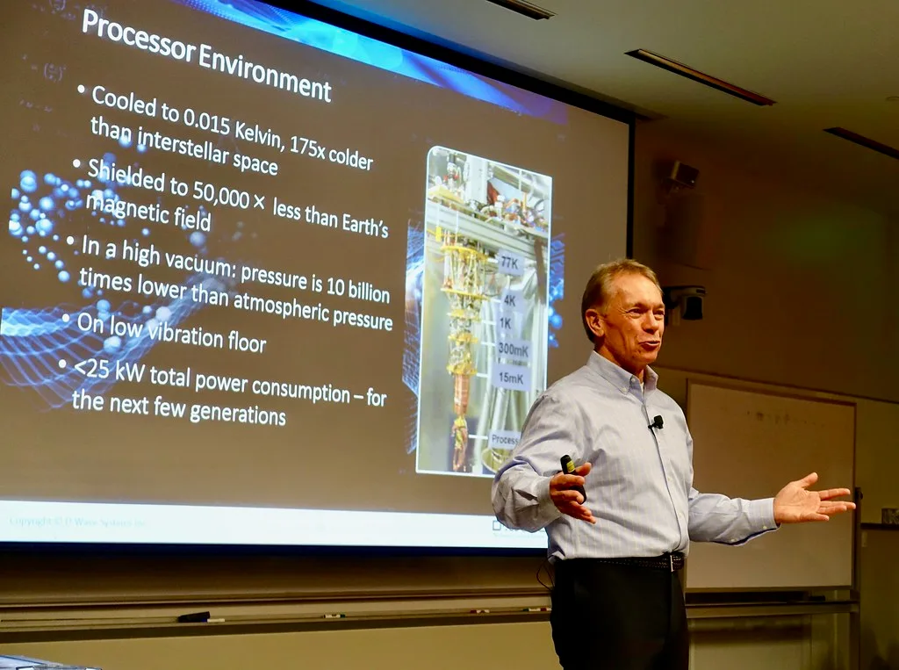

SKT-KISTI, 양자암호통신망 '디지털 트윈' 기술 세계 최초 개발
SK텔레콤과 한국과학기술정보연구원(KISTI)이 양자암호통신망을 실제로 구축하기 전에 성능과 운용 가능성을 미리 검증하는 '디지털 트윈' 기술을 세계 최초로 개발했다고 밝혔다. 이 기술은 지난 21일부터 스페인 말라가에서 열리고 있는 유럽 최대 광통신 국제행사 ECOC(European Conference on Optical Communication) 2026에서 처음 공개됐다. 양 기관은 이번 성과가 양자암호통신 인프라 구축 방식 자체를 바꿀 수 있는 기술이라고 설명했다.
양자암호통신망은 도청이 원천적으로 불가능한 차세대 보안 통신 기술로 꼽히지만, 한번 구축하고 나면 광케이블 길이나 광 손실 같은 조건을 바꾸기가 매우 까다롭다는 한계가 있었다. 장비 가격도 비싸 다양한 조건을 실제 현장에서 시험해보기 쉽지 않았던 것이 업계의 오랜 숙제였다. 이번에 개발된 디지털 트윈 기술은 이런 문제를 해결하기 위해, 실제 망을 깔기 전에 가상 환경에서 다양한 조건을 미리 시뮬레이션해 검증할 수 있도록 한 것이 핵심이다.

연구진은 가상 환경에서 검증이 끝난 구성과 설정, 즉 어떤 장비를 어느 거리에 어떤 값으로 배치할지를 실제 운영 환경에 그대로 적용할 수 있다는 점에서 이 기술 자체가 곧 디지털 트윈 역할을 한다고 설명했다. 이렇게 되면 사업자 입장에서는 값비싼 장비를 여러 차례 재배치하며 시행착오를 겪지 않고도 최적의 망 구성을 미리 찾아낼 수 있어, 구축 비용과 시간을 크게 절감할 수 있을 것으로 기대된다.
이번 기술 개발에서 SK텔레콤은 양자키관리 시스템을 컨테이너 기반으로 구현해 쿠버네티스로 배포·운영하는 역할을 맡았다. 이런 구조 덕분에 키관리 시스템은 시뮬레이터가 만들어내는 다양한 네트워크 환경과 키관리 시나리오에 맞춰 유연하게 확장하면서 실시간으로 성능을 검증할 수 있었다는 게 회사 측 설명이다. KISTI는 QKD, 즉 양자키분배 시뮬레이터 개발을 담당하며 가상 네트워크 환경 구현을 이끌었다.
양 기관은 서로 다른 조직이 독립적으로 개발한 양자키관리 시스템과 QKD 시뮬레이터를 국제표준 인터페이스로 연동해 공개적으로 검증한 것은 이번이 처음이라는 점에 의미를 부여했다. 그동안 양자암호통신 관련 기술은 기관별로 폐쇄적으로 개발되는 경우가 많아 상호 연동성 검증이 쉽지 않았는데, 이번 성과를 계기로 서로 다른 시스템 간 호환성을 높이는 표준화 작업에도 속도가 붙을 것이라는 전망이 나온다.
업계에서는 이번 기술이 통신 3사를 비롯한 국내 사업자들의 양자암호통신망 구축 계획에도 영향을 미칠 것으로 내다보고 있다. 실제 구축 전 단계에서 문제점을 사전에 걸러낼 수 있게 되면 초기 투자 실패 위험을 줄일 수 있는 만큼, 공공기관과 금융권 등 보안이 중요한 분야를 중심으로 양자암호통신 도입 논의가 한층 활발해질 것이라는 관측도 함께 제기된다. 아울러 이번 성과가 국제 표준화 무대에서 국내 기술의 위상을 높이는 계기가 될 것이라는 기대도 나온다.
이번 발표가 이뤄진 ECOC는 매년 유럽 주요 도시를 돌며 열리는 광통신 분야 최대 규모의 국제 학술·산업 행사로, 전 세계 통신 장비 업체와 연구기관이 최신 기술을 선보이는 자리로 꼽힌다. 국내 기업과 연구기관이 이런 국제 무대에서 세계 최초 타이틀을 단 성과를 공개했다는 점에서, 양자암호통신 분야에서 한국의 기술 경쟁력을 국제적으로 알리는 계기가 됐다는 평가가 나온다.